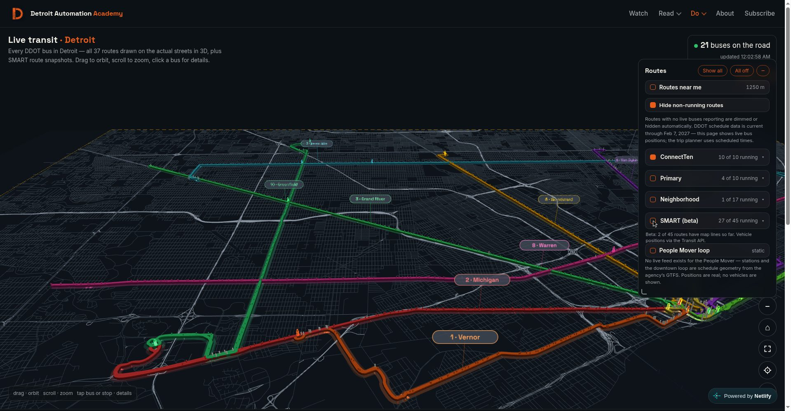

Live Transit Detroit · Installment 05 · October 2026
Beyond 8 Mile
Published October 11, 2026 · By Justin Spencer Smith
Eight Mile Road is Detroit's most loaded boundary — the line between the city and the suburbs, and until tonight, the edge of the Live Transit map. Beyond it: nothing. Five changes shipped to production tonight, and the first is that the street mosaic now covers the full SMART service area instead of stopping at the city line. Every SMART visual renders in one red. The SMART filter ships off by default, labeled beta, with its limits stated on the panel. And route ribbons are smoothed at every zoom. Each change was verified against served bytes and live renders before shipping; the verification is documented below.
What shipped
| Change | What it does |
|---|---|
| Street mosaic expansion | The street layer was regenerated from TIGER/Line 2025 for a wider box — west to lon -83.385, south to lat 42.178 — reaching the western suburbs and Downriver, covering all 270 SMART stops with margin. 38,342 segments (up from ~32,618); the file shrank from 1.25 MB to 1.2 MB through tighter encoding. Full three-tier coverage (freeway, arterial, local) across the entire area. |
| Fade transition | Detroit streets stay always-on. The suburban layer fades in over 900 ms when the SMART group toggles on and fades out when it toggles off — mid-fade re-toggles reverse from the current opacity, so the layer never pops. The dashed amber coverage border expands with it, and "routes near you" now works in the suburbs while SMART is on. |
| All-SMART red | Every SMART visual — route lines, bus markers, stop pylons, map labels, filter chips — now renders in SMART's brand red #c30915. Routes 261 and 125 previously rendered in purple (#A855F7) and teal (#14B8A6); those assignments are retired. Implemented as a single color override where the SMART data merges in, so no downstream consumer can keep an old color. |
| SMART (beta), off by default | The 45-route SMART group ships toggled off on first load, labeled "SMART (beta)", with the disclaimer: "Beta: 2 of 45 routes have map lines so far. Vehicle positions via the Transit API." The toggle choice persists between visits. When off, zero Transit-derived artifacts render — no lines, no markers, no badge. Verified: 25 buses with SMART off, 89 with it on, back to exactly 25 when toggled off again, no leftovers. |
| Ribbon smoothing | Route ribbons were built as straight segments between sparse shape points — 90.6% of joints turned more than 5°, 42% more than 30° — producing a blocky plank-joint look at intermediate zoom. Two iterations of Chaikin subdivision (4× point density) plus true angle-bisector miter joins now render every curve as a smooth continuous ribbon with constant width through bends. Colors, widths, glow, and lighting are unchanged. |

Verification
Served bytes confirmed on production: live-transit.js stamp v20261010-2345 containing the Chaikin/miter functions, the SMART_BOUNDS street partition and fade controller, the SMART-red override, and the beta filter persistence; assets/detroit-streets.json serving 1,198,675 bytes with the expanded bounding box and 38,342 segments. Live renders confirmed: the fade in/out with mid-fade reversal, all 45 SMART filter chips rendering #c30915, smooth ribbons at intermediate zoom, and the off-toggle leaving zero SMART artifacts. Syntax-checked before push; no remaining references to the old purple/teal route colors.
What this means for the map
The map no longer ends at the city line. SMART's 270 suburban stops — previously floating over unmapped dark, west and south of any road — now sit on a street grid that arrives and departs with the SMART toggle. The honest framing stays: 43 of 45 SMART routes still await line geometry, and the beta label states that on the filter panel. Route-line geometry for the remaining routes is the next backfill.